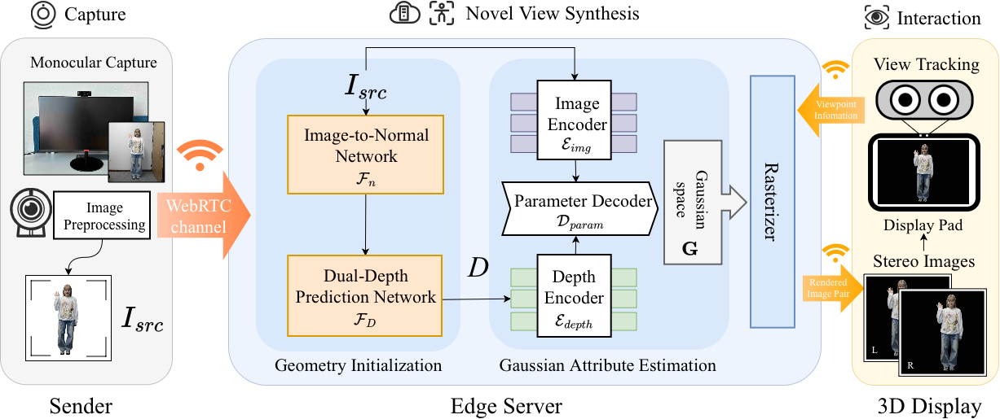
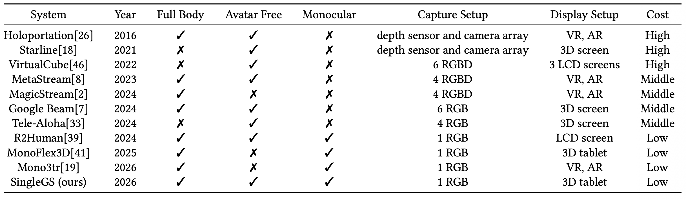
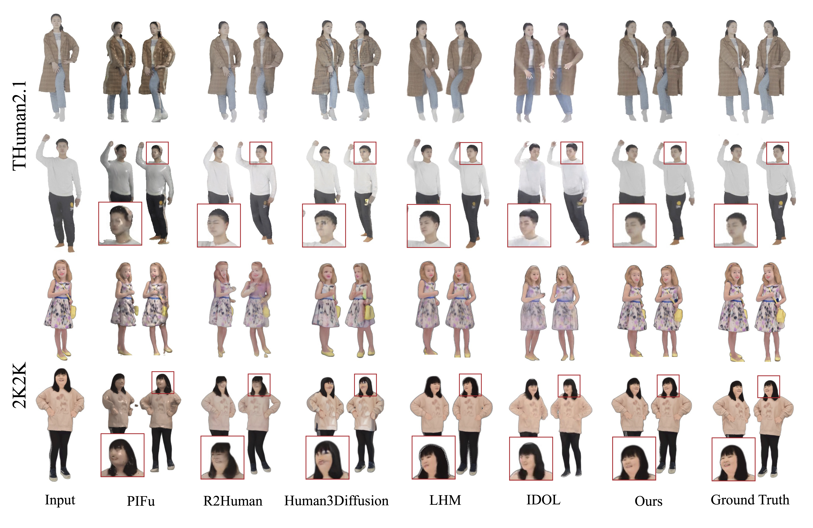
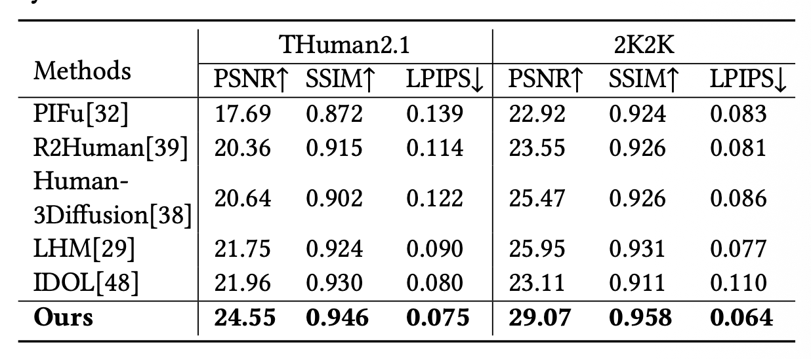
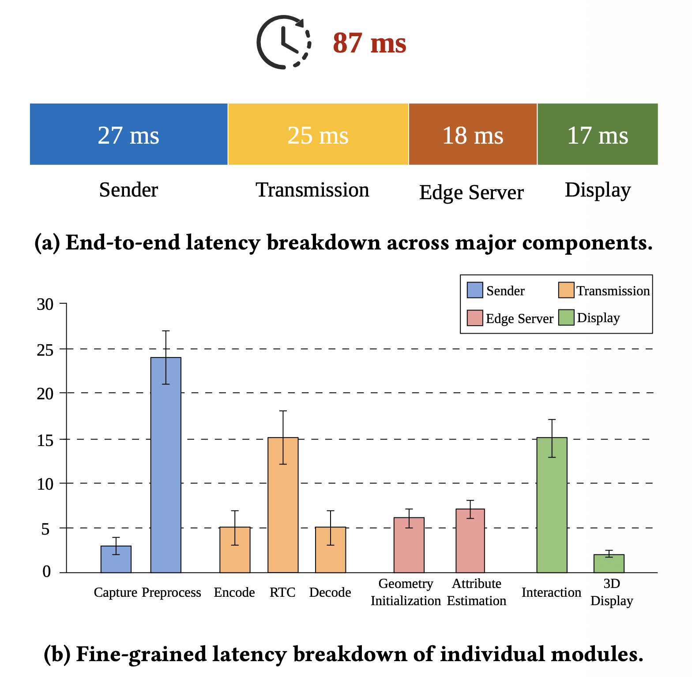

Immersive 3D telepresence promises a transformative paradigm for remote interaction, enabling participants to perceive a compelling sense of shared physical presence. However, existing systems rely on costly multi-view capture hardware, which limits their widespread adoption. We present SingleGS, an end-to-end high-fidelity monocular 3D telepresence system built entirely on consumer-grade devices. The system comprises a monocular RGB camera, an edge server for 3D reconstruction and rendering, and a glasses-free 3D tablet with view tracking. To reconstruct photorealistic humans from ambiguous monocular input under strict latency constraints, SingleGS infers a 3D Gaussian representation directly from each RGB frame through geometry initialization and Gaussian attribute estimation. Experiments show state-of-the-art visual quality, especially at close-range views, while the complete prototype maintains at least 28 FPS with approximately 90 ms end-to-end latency.

The SingleGS system consists of three main components: a sender, an edge server, and a glass-free 3D display. The sender performs monocular RGB capture and transmits the preprocessed frames to the server through a WebRTC channel. The edge server performs the frame-wise reconstruction, including geometry initialization, Gaussian attribute estimation, and novel-view rendering using a 3DGS rasterizer. Based on real-time view-tracking, the rendered stereo image pair is streamed to the 3D display. Then, the corresponding stereo content is presented, enabling autostereoscopic 3D visualization.




@inproceedings{huang2026singlegs,
title = {SingleGS: Consumer-Grade Monocular 3D Telepresence with Real-Time 3D Gaussian Rendering},
author = {Huang, Xuling and Lin, Tao and Zhao, Rui and Zhang, Yuan and Fang, Li and Yan, Jinyao},
booktitle = {Proceedings of the 34th ACM International Conference on Multimedia},
year = {2026},
doi = {10.1145/3767308.3836177}
}